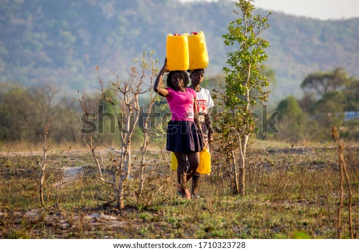
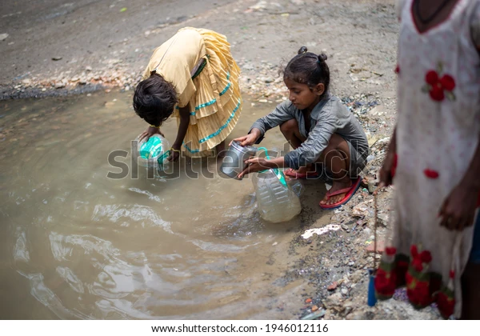
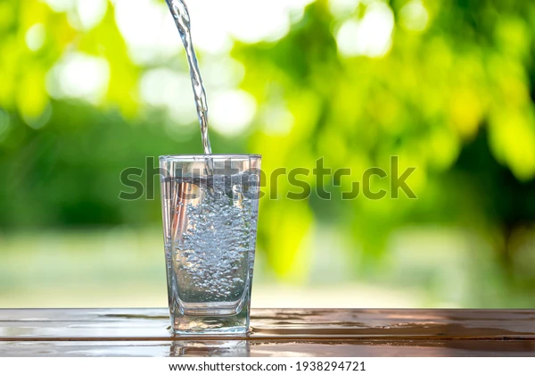

Water Scarcity
Water is a complex issue given that there is no one primary cause for the global water crisis. Water scarcity is a more objective means of comparing the availability (or lack thereof) of water across countries, usually representing the ratio of a region’s water demand to water supply. This means that we can quantify the water crisis as a whole. However, this doesn’t account for all of the risks involved in the global water crisis. Water stress is therefore a broader term that basically means that there is not enough potable water to meet demand. This not only accounts for what’s available, but also the quality of water, environmental factors that determine a country’s future water availability, and public management of water infrastructure. This can be a bit more subjective, which is why one organization may prioritize certain indicators as opposed to others.
Sanitization
Some 829 000 people in low- and middle-income countries die as a result of inadequate water, sanitation, and hygiene each year, representing 60% of total diarrhoeal deaths. Poor sanitation is believed to be the main cause in some 432 000 of these deaths and is a major factor in several neglected tropical diseases, including intestinal worms, schistosomiasis, and trachoma. Poor sanitation also contributes to malnutrition. Diarrhoea remains a major killer but is largely preventable. Better water, sanitation, and hygiene could prevent the deaths of 297 000 children aged under 5 years each year. Open defecation perpetuates a vicious cycle of disease and poverty. The countries where open defection is most widespread have the highest number of deaths of children aged under 5 years as well as the highest levels of malnutrition and poverty, and big disparities of wealth.
Water Quality
Water quality is one of the main challenges that societies will face during the 21st century, threatening human health, limiting food production, reducing ecosystem functions, and hindering economic growth. Water quality degradation translates directly into environmental, social and economic problems. The availability of the world’s scarce water resources is increasingly limited due to the worsening pollution of freshwater resources caused by the disposal of large quantities of insufficiently treated, or untreated, wastewater into rivers, lakes, aquifers and coastal waters. Furthermore, newly emerging pollutants like personal care products and pharmaceuticals, pesticides, and industrial and household chemicals, and changing climate patterns represent a new water quality challenge, with still unknown long-term impacts on human health and ecosystems.
